Advances of the Project
Title / Objective:
Reproducible Analysis of CMS Open Data: Search for Dark Matter in Association with Top Quarks (Based on the CMS publication: “Search for dark matter produced in association with a single top quark or a top quark pair in proton–proton collisions at (\(\sqrt s = 13 TeV\)”).
Physics Motivation
The Large Hadron Collider (LHC) operates at center-of-mass energies sufficient to probe physics beyond the Standard Model (BSM). A primary goal of the LHC program is to identify the nature of Dark Matter (DM). In many simplified models, DM candidates (\(\chi\)) interact with Standard Model particles via a new mediator (\(\phi\) or \(a\)). Since these mediators often couple to mass (Yukawa-like coupling), the top quark—being the heaviest elementary particle—offers the most sensitive probe for direct DM production.
At the parton level, the interaction produces top quarks accompanied by a mediator, which subsequently decays into a pair of invisible DM particles (\(\chi\bar{\chi}\)). This results in a final state characterized by heavy flavor quarks and significant Missing Transverse Momentum (\(p_T^{\text{miss}}\)) due to the invisible particles.
The dominant production mechanisms considered are:
-
Gluon Fusion (\(t\bar{t}\)+DM): $\(gg \to t \bar{t}\,\phi \to t \bar{t} + \chi \bar{\chi}\)$
-
Single Top Associated Production (\(tW\)+DM): $\(gb \to t W \phi \to t W + \chi \bar{\chi}\)$
-
t-channel Production (\(tj\)+DM): $\(qq' \to t j \phi \to t j + \chi \bar{\chi}\)$
From Partons to Detector Signatures
The experimental signature is determined by the decay of the top quarks (\(t \to W b\)). The \(W\) boson decays either hadronically (\(W \to q\bar{q}'\), BR \(\approx 67\%\)) or leptonically (\(W \to \ell \nu\), BR \(\approx 33\%\)). Consequently, the analysis is categorized into orthogonal channels based on the number of isolated charged leptons (\(e, \mu\)) in the final state:
-
All-Hadronic (AH) Channel (0 leptons):
- Signature: Multiple jets, b-tags, and large \(p_T^{\text{miss}}\).
- Pros/Cons: Highest signal yield, but suffers from overwhelming QCD multijet background and difficult trigger thresholds.
-
Single-Lepton (SL) Channel (1 lepton):
- Signature: Exactly one isolated lepton, jets, b-tags, and \(p_T^{\text{miss}}\).
- Pros/Cons: The "Golden Channel." It offers an optimal balance, suppressing QCD significantly while retaining higher statistics than the dilepton channel.
-
Dilepton (DL) Channel (2 leptons):
- Signature: Two opposite-sign leptons, jets, and \(p_T^{\text{miss}}\).
- Pros/Cons: Cleanest signal region with very low background, but statistically limited by the low branching fraction.
The Single-Muon Channel
In this workflow, we focus exclusively on the Single-Muon (\(1\mu\)) channel.
This choice is driven by both physics and pedagogical clarity. Experimentally, muons provide a cleaner signature than electrons in the CMS detector, with lower bremsstrahlung rates and robust identification efficiencies. By requiring exactly one high-\(p_T\) muon, we can effectively eliminate the QCD background, leaving \(t\bar{t}\)+Jets and \(W\)+Jets as the primary backgrounds to model.
This strategy allows us to demonstrate a complete End-to-End analysis—from object selection to statistical interpretation—in a controlled environment where the interplay between the DM signal (high \(p_T^{\text{miss}}\)) and Standard Model backgrounds can be clearly studied.
After defining the objective of the project (Reproducible Analysis of CMS Open Data), we discussed in which data format to work — NanoAOD or MiniAOD. We decided to use NanoAOD, because it is lighter and optimized for analysis tasks.
In the most precise version, we work within cernbox/swan, but it can work in any Jupyter environment; the important packages are: uproot and awkward
Single Lepton
by B.V
We import all the libraries that we are going to use.
%load_ext autoreload
%autoreload 2
import numpy as np
import pandas as pd
import matplotlib.pyplot as plt
import hist
import requests
import os
import time
import json
import awkward as ak
import uproot
import vector
vector.register_awkward()
We will use the dpoa_workshop_utilities module to help you access the datasets. The functions it contains are:
The nanoaod_filenames is a dictionary with the urls to the file indexes of the root files for every dataset that we will use in the analysis.
The pretty_print(fields, fmt='40s', require=None, ignore=None) function allows you to print subsets of keys based on strings that you require or ignore. It will also format that output based on how many characters you want in a column (you are limited to 80 characters per line).
The build_lumi_mask(lumifile, tree, verbose=False) function helps you mask (select) the data that's collected from collisions.
#-------------------------------
import dpoa_workshop
from dpoa_workshop import (
nanoaod_filenames,
get_files_for_dataset,
pretty_print,
build_lumi_mask
)
#-------------------------------------------
In the drafts related to the papers, the datasets used from 2016 are listed along with their run periods and corresponding luminosities. However, one must be careful with these values, because not all periods are available and the data format differs from the one originally used, as previously noted.”
from IPython.display import Image, display
display(Image(filename="dataset_2016.png"))

display(Image(filename="MC_data.png"))

Building the Ntuple File Index
CMS Open Data provides file index text files (file_index.txt) for each dataset.
These contain the actual XRootD paths to the NanoAOD .root files, along with metadata such as the number of events per file. Example line:
root://eospublic.cern.ch//eos/opendata/cms/mc/.../nano_1.root nevts=58293
The objective is to collect file paths from multiple URLs, organize them by dataset, and store them in a JSON file, while handling possible download errors so the program keeps running.
To streamline the workflow:
- We define a function
download_files(url)that fetches eachfile_index.txtvia HTTP and extracts only the ROOT file paths. - We loop over all entries in
nanoaod_filenames(the dictionary we built earlier) and collect the full list of ROOT files per dataset. - The result is stored in a new dictionary
ntuples, which maps dataset -- list of ROOT file paths. - Finally, we save this as a JSON file (
ntuples.json) for later reuse
#import requests
#import json
def download_files(url):
r = requests.get(url)
lines = [ln.strip() for ln in r.text.splitlines() if ln.strip()]
paths = [ln.split()[0] for ln in lines]
return paths
ntuples = {}
print(f"{'Dataset':<30} | {'Part':<5} | {'Files'}")
print("-" * 50)
for dataset, urls in nanoaod_filenames.items():
all_paths = []
for i, url in enumerate(urls):
try:
paths = download_files(url)
print(f"{dataset[:30]:<30} | {i:<5} | {len(paths)}")
all_paths.extend(paths)
except Exception as e:
print(f"[warn] {dataset} {url}--{e}")
ntuples[dataset] = all_paths
with open("ntuples.json", "w") as f:
json.dump(ntuples, f, indent=2)
print("-" * 50)
print("ntuples.json creado. Keys:", list(ntuples.keys()))
Dataset | Part | Files
--------------------------------------------------
met | 0 | 7
met | 1 | 4
met | 2 | 21
SingleMuon | 0 | 1
SingleMuon | 1 | 1
SingleMuon | 2 | 40
SingleMuon | 3 | 8
SingleMuon | 4 | 32
SingleElectron | 0 | 6
SingleElectron | 1 | 20
SingleElectron | 2 | 11
SingleElectron | 3 | 43
ttbar-semileptonic | 0 | 41
ttbar-semileptonic | 1 | 26
ttbar-semileptonic | 2 | 23
ttbar-semileptonic | 3 | 21
ttbar-semileptonic | 4 | 27
t-channel-top | 0 | 4
t-channel-top | 1 | 4
t-channel-top | 2 | 5
t-channel-top | 3 | 11
t-channel-top | 4 | 1
t-channel-antitop | 0 | 13
ttW | 0 | 4
ttW | 1 | 4
ttW | 2 | 1
ttW | 3 | 3
WJets-HT400to600 | 0 | 3
WJets-HT400to600 | 1 | 1
WJets-HT400to600 | 2 | 2
WJets-HT400to600 | 3 | 2
WJets-HT400to600 | 4 | 3
WJets-HT100to200 | 0 | 3
WJets-HT100to200 | 1 | 5
WJets-HT100to200 | 2 | 3
WJets-HT100to200 | 3 | 3
WJets-HT100to200 | 4 | 6
WJets-HT200to400 | 0 | 9
WJets-HT200to400 | 1 | 14
WJets-HT200to400 | 2 | 20
WJets-HT200to400 | 3 | 8
WJets-HT200to400 | 4 | 9
WJets-HT70to100 | 0 | 4
WJets-HT70to100 | 1 | 3
WJets-HT70to100 | 2 | 2
WJets-HT70to100 | 3 | 3
WJets-HT70to100 | 4 | 7
DYJets-Zpt200 | 0 | 10
WW | 0 | 10
WW | 1 | 16
WW | 2 | 12
WW | 3 | 3
ZZ | 0 | 3
ZZ | 1 | 6
ZZ | 2 | 5
ZZ | 3 | 3
Zvv | 0 | 14
--------------------------------------------------
ntuples.json creado. Keys: ['met', 'SingleMuon', 'SingleElectron', 'ttbar-semileptonic', 't-channel-top', 't-channel-antitop', 'ttW', 'WJets-HT400to600', 'WJets-HT100to200', 'WJets-HT200to400', 'WJets-HT70to100', 'DYJets-Zpt200', 'WW', 'ZZ', 'Zvv']
Since ntuples.json concatenates all files into a single flat list per dataset, the distinction between source URLs (which often represent different periods like Run2016G vs Run2016H) is lost in the final file.
Why counting matters:
By logging the number of files in each part (len(paths)), we establish a positional map:
1. It helps us identify which specific period a root file belongs to based on its index in the merged list.
2. It ensures we can verify that the total file count matches the sum of the individual periods (sanity check).
And we will download important files like the luminosity file.
!wget https://opendata.cern.ch/record/14220/files/Cert_271036-284044_13TeV_Legacy2016_Collisions16_JSON.txt
--2025-11-05 20:43:37-- https://opendata.cern.ch/record/14220/files/Cert_271036-284044_13TeV_Legacy2016_Collisions16_JSON.txt
Resolving opendata.cern.ch (opendata.cern.ch)... 137.138.6.31, 2001:1458:201:8b::100:1c8
Connecting to opendata.cern.ch (opendata.cern.ch)|137.138.6.31|:443... connected.
HTTP request sent, awaiting response... 200 OK
Length: 11686 (11K) [text/plain]
Saving to: ‘Cert_271036-284044_13TeV_Legacy2016_Collisions16_JSON.txt’
Cert_271036-284044_ 100%[===================>] 11.41K --.-KB/s in 0.001s
2025-11-05 20:43:38 (10.2 MB/s) - ‘Cert_271036-284044_13TeV_Legacy2016_Collisions16_JSON.txt’ saved [11686/11686]
Complete dictionary, in case it's possible to add all the events but it hasn't been found or verified yet...
XSEC2_PB = {
##### TOP QUARK #############
"ttbar-semileptonic": 364.35,
"t-channel-top": 136.02, # ST t-channel top
"t-channel-antitop": 80.95, # ST t-channel antitop
"tW-top": 35.85, # ST tW top
#### Rare Top
"ttW": 0.2043, # to TTWJetsToLNu
"ttZ": 0.2529, # to TTZToLLNuNu
##### WJETS (HT Binned)
"WJets-HT70to100": 1372.0,
"WJets-HT100to200": 1345.0, # (Check this value, it seems high to be binned, maybe it's LO)
"WJets-HT200to400": 359.7,
"WJets-HT400to600": 48.91,
"WJets-HT600to800": 12.05,
"WJets-HT800to1200": 5.501,
"WJets-HT1200to2500": 1.329,
"WJets-HT2500toInf": 0.0322,
#######DRELL-YAN (DY)
"DYJets-HT100to200": 147.40,
"DYJets-HT200to400": 40.99,
"DYJets-HT400to600": 5.678,
##### DIBOSON
"WW": 118.7,
"ZZ": 16.6,
"WZ": 47.13
}
until while these datasets are being used
XSEC_PB = {
##### Top Quark
"ttbar-semileptonic": 364.35,
"t-channel-top": 136.02,
"t-channel-antitop": 80.95,
"ttW": 0.2043,
##### WJets
"WJets-HT70to100": 1372.0,
"WJets-HT100to200": 1345.0,
"WJets-HT200to400": 359.7 , ## in data , wrong
"WJets-HT400to600": 48.91,
# --- Electroweak / Bosons ---
"DYJets-Zpt200": 1.27,
"WW": 118.7,
"ZZ": 16.6,
"Zvv": 77.3,
}
This function builds the fileset used by the analysis. It reads the JSON inventory of ntuples, identifies which samples are data or MC, applies an optional file limit for fast debugging, and attaches minimal metadata such as the cross section and number of files. The output is a clean, ready-to-use dictionary that tells the processor exactly which datasets to run over and how they should be treated.
def construct_fileset(ntuples_json="ntuples.json", limit=None, verbose=True):
"""
Parses the input JSON inventory and assigns metadata (xsec, is_data).
Args:
ntuples_json (str): Path to the JSON file containing the file lists.
limit (int or None): Max number of files to load per process.
Useful for quick debugging (e.g., limit=1).
If None, loads all files (production mode).
verbose (bool): If True, prints a summary table of loaded samples.
Returns:
dict: A dictionary structured for the processor (Coffea/UpRoot).
"""
with open(ntuples_json) as f:
info = json.load(f)
fileset = {}
if verbose:
print(f"\n{'Name':30} {'Type':>6} {'N Files':>10} {'XSEC [pb]':>12}")
print("-" * 65)
for process_name, file_list in info.items():
# Slicing handles None gracefully, but explicit check is clearer for readers
if limit is not None:
files_to_use = file_list[:limit]
else:
files_to_use = file_list
# IDENTIFY TYPE (DATA vs MC)
if process_name in XSEC_PB:
is_data = False
xsec_value = XSEC_PB[process_name]
proc_type = "MC"
else:
is_data = True
xsec_value = None # Real data has no theoretical xsec here
proc_type = "DATA"
#### BUILD DICTIONARY
# Minimal metadata structure to keep it lightweight
fileset[process_name] = {
"files": files_to_use,
"metadata": {
"is_data": is_data,
"xsec": xsec_value,
"n_files_loaded": len(files_to_use)
}
}
# LOGGING ---
if verbose:
xsec_str = f"{xsec_value:.2f}" if xsec_value else "-"
print(f"{process_name:30} {proc_type:>6} {len(files_to_use):>10} {xsec_str:>12}")
return fileset
This line initializes the full list of datasets for the analysis. It loads all ntuples defined in ntuples.json (since limit=None) and prints a summary of the samples. The resulting fileset becomes the central input that tells the processor which data and MC files to process.
fileset = construct_fileset(
ntuples_json="ntuples.json",
limit=None,
verbose=True
)
Name Type N Files XSEC [pb]
-----------------------------------------------------------------
met DATA 32 -
SingleMuon DATA 82 -
SingleElectron DATA 80 -
ttbar-semileptonic MC 138 364.35
t-channel-top MC 25 136.02
t-channel-antitop MC 13 80.95
ttW MC 12 0.20
WJets-HT400to600 MC 11 48.91
WJets-HT100to200 MC 20 1345.00
WJets-HT200to400 MC 60 359.70
WJets-HT70to100 MC 19 1372.00
DYJets-Zpt200 MC 10 1.27
WW MC 41 118.70
ZZ MC 17 16.60
Zvv MC 14 77.30
We are about to treat the data as a "black box" in the processing loop. But we need to verify the inputs first. We use uproot, which is a Python library that allows us to read CERN ROOT files directly, without needing C++.
dataset = "SingleMuon" ##just for training
for i, fpath in enumerate(fileset[dataset]["files"][:10]):
print(f"{i+1:2d}. {fpath}")
1. root://eospublic.cern.ch//eos/opendata/cms/Run2016H/SingleMuon/NANOAOD/UL2016_MiniAODv2_NanoAODv9-v1/120000/61FC1E38-F75C-6B44-AD19-A9894155874E.root
2. root://eospublic.cern.ch//eos/opendata/cms/Run2016H/SingleMuon/NANOAOD/UL2016_MiniAODv2_NanoAODv9-v1/1210000/576759DA-4A35-534B-B926-2A9E4A5A7268.root
3. root://eospublic.cern.ch//eos/opendata/cms/Run2016H/SingleMuon/NANOAOD/UL2016_MiniAODv2_NanoAODv9-v1/130000/0107961B-4308-F845-8F96-E14622BBA484.root
4. root://eospublic.cern.ch//eos/opendata/cms/Run2016H/SingleMuon/NANOAOD/UL2016_MiniAODv2_NanoAODv9-v1/130000/0DEE1709-0416-F24B-ACB2-C68997CB6465.root
5. root://eospublic.cern.ch//eos/opendata/cms/Run2016H/SingleMuon/NANOAOD/UL2016_MiniAODv2_NanoAODv9-v1/130000/1C08614E-0C0E-6044-966A-CAF630CAEF8F.root
6. root://eospublic.cern.ch//eos/opendata/cms/Run2016H/SingleMuon/NANOAOD/UL2016_MiniAODv2_NanoAODv9-v1/130000/1D87B4FB-E31C-9F43-AC21-C32469DE9FC6.root
7. root://eospublic.cern.ch//eos/opendata/cms/Run2016H/SingleMuon/NANOAOD/UL2016_MiniAODv2_NanoAODv9-v1/130000/1EB443F2-1230-8042-B8AE-FD50329CA59B.root
8. root://eospublic.cern.ch//eos/opendata/cms/Run2016H/SingleMuon/NANOAOD/UL2016_MiniAODv2_NanoAODv9-v1/130000/2045F967-9F0A-7C46-9946-787B27D56E88.root
9. root://eospublic.cern.ch//eos/opendata/cms/Run2016H/SingleMuon/NANOAOD/UL2016_MiniAODv2_NanoAODv9-v1/130000/236A04EE-C105-D947-8A2E-F8CC6731644F.root
10. root://eospublic.cern.ch//eos/opendata/cms/Run2016H/SingleMuon/NANOAOD/UL2016_MiniAODv2_NanoAODv9-v1/130000/370BE877-DA24-DB41-A875-07A86EAB6852.root
#import uproot
sample = "ttbar-semileptonic"
root_path = fileset[sample]["files"][0]
print("Open:", root_path)
f = uproot.open(root_path)
events = f["Events"]
print("# events:", events.num_entries)
all_keys = events.keys()
print(f"Total braches : {len(all_keys)}")
Open: root://eospublic.cern.ch//eos/opendata/cms/mc/RunIISummer20UL16NanoAODv9/TTToSemiLeptonic_TuneCP5_13TeV-powheg-pythia8/NANOAODSIM/106X_mcRun2_asymptotic_v17-v1/120000/08FCB2ED-176B-064B-85AB-37B898773B98.root
# events: 1233000
Total braches : 1504
if "genWeight" in events.keys():
gw = events["genWeight"].array(entry_stop=100_000, library="np")
print(f"genWeight: mean={gw.mean():.3f}, std={gw.std():.3f}, negativos={(gw<0).mean():.2%}")
else:
print("There is no genWeight")
genWeight: mean=300.828, std=39.097, negativos=0.42%
Because std > 0 and negativos > 0, you have learned a golden rule for this dataset:
NEVER count events.
Wrong: N = len(events)
Right: N = sum(events.genWeight)
If you just count them (len), you will be wrong by 0.84% (counting the negatives as positives instead of subtracting them).
"Having defined the dataset, we move to data processing. Since the reference analysis has already optimized the kinematic variables, we will adopt their final cuts directly. We will retrieve these specific thresholds from the summary tables and apply the necessary selection techniques to our data."
The workflow proceeds in three main steps:
-
Apply the baseline selection We first select events that match the single-lepton topology (electron or muon). This removes events that clearly do not belong to the channel and defines the core event structure we will work with.
-
Filter the events After the baseline, we keep only the events that satisfy these basic criteria. This produces a clean and well-defined sample for further analysis.
-
Apply additional cuts to build CR and SR With the filtered sample, we introduce extra requirements to define:
-
Control Regions (CR): used to study and validate the dominant backgrounds.
- Signal Region (SR): where the dark-matter search is performed.
This step-by-step structure mirrors the logic used in the CMS paper and ensures a transparent and reproducible analysis flow.
So all of this is reflected in the tables, which are directly the cuts we should use, and we don't have to explore it ourselves in this case for this guide.
Base line
If you read the drafts
Table 10 — Baseline Selection (SL and AH)
The minimum or baseline selection that every event must satisfy before being assigned to any region (Signal or Control).
It includes:
- Lepton quality and type (muons, electrons)
- Minimum cuts on pT and η
- Requirements on jets and b-jets
- Event-cleaning criteria
- Additional-lepton veto
It acts as the universal first filter of the analysis. No event enters the SR or CR without passing this baseline.
Tables 11 and 12 — Expected Events After Optimized Cuts (SL and AH)
Tables showing:
- Expected event yields for each background
- Predictions for different signal models
- Results after the baseline plus optimized cuts
These tables serve only for internal validation in the paper:
- Checking consistency between simulated backgrounds and signals
- Showing how many events remain under different signal hypotheses
from IPython.display import Image, display
display(Image(filename="Table_10.png"))
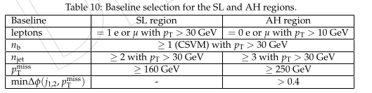
Single Muon
1.“Load all physics objects (muons, electrons, jets, MET) from the ROOT file and package them as 4-vectors. This prepares the event for the physics selections that follow.”
2.“Apply the baseline selection: require exactly one tight muon, veto additional leptons, and apply the minimal MET requirement. This defines the core single-lepton topology before any SR or CR classification.”
3.“Clean all jets (quality, pT, ΔR from the muon) and classify them as central or forward. Retain only events with at least two central jets, as required by the topology used in the analysis.”
4.Compute the physics variables used throughout the analysis: W transverse mass, jet multiplicities, b-tag multiplicity, minΔφ(jets,MET), forward-jet count, and mT(b). These variables are the basis for the SR/CR definitions and the later shape studies.
5.Package all selected events and computed variables into NumPy arrays. This standardized structure makes it easy to plot distributions, apply further event selection, or feed the results into statistical tools.
#import awkward as ak
#import uproot
#import numpy as np
#colorsimport vector
vector.register_awkward()
# 1. ###################################
def process_file_muon(filename, dataset="Unknown", IS_DATA=False):
try:
with uproot.open(f"{filename}:Events") as tree:
muons = ak.zip({
"pt": tree["Muon_pt"].array(),
"eta": tree["Muon_eta"].array(),
"phi": tree["Muon_phi"].array(),
"mass": tree["Muon_mass"].array(),
"iso": tree["Muon_pfRelIso04_all"].array(),
"tightId": tree["Muon_tightId"].array(),
"looseId": tree["Muon_looseId"].array(),
}, with_name="Momentum4D")
electrons = ak.zip({
"pt": tree["Electron_pt"].array(),
"eta": tree["Electron_eta"].array(),
"phi": tree["Electron_phi"].array(),
"mass": tree["Electron_mass"].array(),
"cutBased": tree["Electron_cutBased"].array(),
}, with_name="Momentum4D")
jets = ak.zip({
"pt": tree["Jet_pt"].array(),
"eta": tree["Jet_eta"].array(),
"phi": tree["Jet_phi"].array(),
"mass": tree["Jet_mass"].array(),
"jetId": tree["Jet_jetId"].array(),
"btag": tree["Jet_btagDeepFlavB"].array(),
}, with_name="Momentum4D")
met_pt = tree["MET_pt"].array()
met_phi = tree["MET_phi"].array()
if not IS_DATA:
gen_weight = tree["genWeight"].array()
else:
gen_weight = ak.ones_like(met_pt)
##############################################################################
##### 2. SELECCIÓN BASELINE ###
mu_tight_mask = (muons.pt > 30) & (abs(muons.eta) < 2.4) & (muons.tightId) & (muons.iso < 0.15)
mu_loose_mask = (muons.pt > 10) & (abs(muons.eta) < 2.4) & (muons.looseId) & (muons.iso < 0.25)
ele_veto_mask = (electrons.pt > 10) & (abs(electrons.eta) < 2.5) & (electrons.cutBased >= 1)
good_muons = muons[mu_tight_mask]
veto_muons = muons[mu_loose_mask]
veto_electrons = electrons[ele_veto_mask]
has_1_tight_mu = (ak.num(good_muons) == 1)
veto_extra_lep = (ak.num(veto_muons) == 1) & (ak.num(veto_electrons) == 0)
pass_met = met_pt > 150
event_mask = has_1_tight_mu & veto_extra_lep & pass_met
# Filtrado inicial
good_muons = good_muons[event_mask]
jets = jets[event_mask]
met_pt = met_pt[event_mask]
met_phi = met_phi[event_mask]
gen_weight = gen_weight[event_mask]
leading_mu = good_muons[:, 0]
# 3. ###########################################################3
jet_clean_mask = (
(jets.pt > 30) &
(jets.jetId >= 1) &
(jets.deltaR(leading_mu) > 0.4)
)
all_clean_jets = jets[jet_clean_mask]
# B. Separar Central vs Forward (NUEVO)
central_jets = all_clean_jets[abs(all_clean_jets.eta) < 2.4]
forward_jets = all_clean_jets[(abs(all_clean_jets.eta) >= 2.4) & (abs(all_clean_jets.eta) < 5.0)]
has_2_jets = ak.num(central_jets) >= 2
###################################33###############################3
# --- 4. ################################################################3
f_met = met_pt[has_2_jets]
f_met_phi = met_phi[has_2_jets]
f_mu = leading_mu[has_2_jets]
f_central = central_jets[has_2_jets]
f_forward = forward_jets[has_2_jets]
f_gen_weight = gen_weight[has_2_jets]
# mT_W
dphi_lep = f_mu.phi - f_met_phi
mt_w = np.sqrt(2 * f_mu.pt * f_met * (1 - np.cos(dphi_lep)))
# min DeltaPhi
jets_top2 = f_central[:, :2]
dphi_jets = abs(jets_top2.phi - f_met_phi)
dphi_jets = np.mod(dphi_jets + np.pi, 2*np.pi) - np.pi
min_dphi = ak.min(abs(dphi_jets), axis=1)
# B-tagging
is_btag = f_central.btag > 0.2770
n_btag = ak.sum(is_btag, axis=1)
# 1. Conteo Forward Jets
n_fwd = ak.num(f_forward)
# 2. mT_b (Masa Transversa MET - Leading b-jet)
b_jets = f_central[is_btag]
has_b = ak.num(b_jets) > 0
# Padding seguro
b_jet_padded = ak.fill_none(ak.firsts(b_jets), {"pt": 0, "phi": 0}, axis=0)
dphi_b = b_jet_padded.phi - f_met_phi
calc_mt_b = np.sqrt(2 * b_jet_padded.pt * f_met * (1 - np.cos(dphi_b)))
mt_b_np = ak.to_numpy(calc_mt_b)
has_b_np = ak.to_numpy(has_b)
mt_b_np[~has_b_np] = -1.0 # Valor dummy
######## 5 . #############################################################################
return {
"dataset": dataset,
"lep_pt": ak.to_numpy(f_mu.pt),
"lep_eta": ak.to_numpy(f_mu.eta),
"met": ak.to_numpy(f_met),
"mT_W": ak.to_numpy(mt_w),
"genWeight": ak.to_numpy(f_gen_weight),
"nJet": ak.to_numpy(ak.num(f_central)),
"nBTag": ak.to_numpy(n_btag),
"min_dphi": ak.to_numpy(min_dphi),
## to use the processed datasets later
"nForwardJets": ak.to_numpy(n_fwd),
"mT_b": mt_b_np
}
except Exception as e:
print(f"Error procesando {filename}: {e}")
return None
This section details the three-stage pipeline designed to ingest raw ROOT files and convert them into manageable Parquet datasets for the Single-Muon Channel.
🔹 BLOCK 1: Dataset Configuration
Defines the scope of the analysis for the muon channel.
- Classification: It strictly separates the input streams into:
- Data:
SingleMuon(Real experimental data). - Monte Carlo (MC): All other datasets (\(t\bar{t}\), \(W\)+Jets, etc.).
- Data:
- Utility: This separation allows the downstream logic to automatically determine if Generator Weights (required for MC normalization) should be extracted or ignored.
🔹 BLOCK 2: The Orchestrator Function
Acts as the high-level Manager Layer. It abstracts the file I/O and parallelization logic from the physics analysis.
It does not perform physics calculations. Its role is strictly operational: Loop \(\rightarrow\) Collect \(\rightarrow\) Assemble \(\rightarrow\) Save.
* Workflow Steps:
1. Validation: Verifies the dataset exists in the global fileset registry.
2. Differentiation: Sets the is_data flag based on the dataset name.
3. Iteration: Loops through the first n_files of the requested dataset.
4. Delegation: Calls the physics kernel (process_file_muon) to extract observables from each file.
5. Aggregation: Concatenates partial results into a unified pandas.DataFrame.
6. Persistence: Serializes the final DataFrame into a binary Parquet file in the output_raw/ directory.
🔹 BLOCK 3: Execution Loop
Triggers the batch processing.
* Function: Iterates through the list defined in Block 1.
* Control: It calls the orchestrator for each dataset, enforcing a limit on the number of input files (N_FILES) to control the sample size during testing or production runs.
#import pandas as pd
#import os
#import awkward as ak
#import uproot
#import numpy as np
#import vector
vector.register_awkward()
# BLOCK 1 — DATASET LIST (Muon Channel Only)
datasets_muon_channel = [ # DATA
'ttbar-semileptonic', # Main background
'ttW', 'WW', 'ZZ', 'Zvv',
'DYJets-Zpt200',
't-channel-top',
'WJets-HT400to600',
'WJets-HT100to200',
'WJets-HT200to400',
't-channel-antitop',
'WJets-HT70to100'
]
# BLOCK 2 — ORCHESTRATOR FUNCTION (Muon Analysis Logic)
def process_dataset_muon_raw(dataset, n_files=5):
"""
High-level orchestrator:
- Determines if dataset is Data or MC
- Retrieves ROOT files
- Calls the muon-physics function (process_file_muon)
- Converts results to DataFrames
- Concatenates them and saves as a Parquet file
"""
# Check if dataset is Data (only SingleMuon)
is_data = "SingleMuon" in dataset
print(f" Processing RAW {dataset} (Is Data: {is_data})...")
# Verify that dataset exists in the global fileset
if dataset not in fileset:
print(f" {dataset} not found in fileset. Skipping.")
return None
# Select only the first n_files
files = fileset[dataset]["files"][:n_files]
dfs = []
for f in files:
try:
# Call your physics selection function
data_dict = process_file_muon(f, dataset=dataset, IS_DATA=is_data)
# Turn dict into DataFrame
df = pd.DataFrame(data_dict)
dfs.append(df)
except Exception as e:
# A single bad file should not stop the batch
print(f" Error in file {f}: {e}")
# If no results were generated
if len(dfs) == 0:
print(f" No valid events produced for {dataset}")
return None
# Merge all dataframes
full_df = pd.concat(dfs, ignore_index=True)
# Save as parquet in output_raw/
os.makedirs("output_raw", exist_ok=True)
output_path = f"output_raw/{dataset}_raw.parquet"
full_df.to_parquet(output_path, index=False)
print(f" Saved: {output_path} with {len(full_df)} events.")
return full_df
N_FILES = 10 # Increase to 20+ for proper statistics
print(f"=== STARTING MUON PROCESSING ({N_FILES} files per dataset) ===")
for ds in datasets_muon_channel:
process_dataset_muon_raw(ds, n_files=N_FILES)
=== STARTING MUON PROCESSING (10 files per dataset) ===
Processing RAW SingleMuon (Is Data: True)...
Saved: output_raw/SingleMuon_raw.parquet with 10832 events.
Processing RAW ttbar-semileptonic (Is Data: False)...
Saved: output_raw/ttbar-semileptonic_raw.parquet with 108389 events.
Processing RAW ttW (Is Data: False)...
Saved: output_raw/ttW_raw.parquet with 85898 events.
Processing RAW WW (Is Data: False)...
Saved: output_raw/WW_raw.parquet with 8476 events.
Processing RAW ZZ (Is Data: False)...
Saved: output_raw/ZZ_raw.parquet with 100 events.
Processing RAW Zvv (Is Data: False)...
Saved: output_raw/Zvv_raw.parquet with 4 events.
Processing RAW DYJets-Zpt200 (Is Data: False)...
Saved: output_raw/DYJets-Zpt200_raw.parquet with 2240 events.
Processing RAW t-channel-top (Is Data: False)...
Saved: output_raw/t-channel-top_raw.parquet with 6811 events.
Processing RAW WJets-HT400to600 (Is Data: False)...
Saved: output_raw/WJets-HT400to600_raw.parquet with 49574 events.
Note:
Notice that we could reuse the dictionary built earlier (fileset) to automatically loop over all available datasets. However, for debugging and flexibility, a manual list of datasets was defined. At the beginning, only a few datasets were used for quick tests, and later this list was expanded to match the same datasets contained in the fileset. This approach allows easier control during development while keeping compatibility with the full processing workflow.
#import pandas as pd
#import os
#import awkward as ak
#import uproot
#import numpy as np
#import vector
vector.register_awkward()
datasets_muon_channel = [
'SingleMuon',
]
def process_dataset_muon_raw(dataset, n_files=5):
is_data = "SingleMuon" in dataset
print(f" Processing RAW {dataset} (Is Data: {is_data})...")
if dataset not in fileset:
print(f" {dataset} not found in fileset. Skipping.")
return None
files = fileset[dataset]["files"][:n_files]
dfs = []
for f in files:
try:
data_dict = process_file_muon(f, dataset=dataset, IS_DATA=is_data)
df = pd.DataFrame(data_dict)
dfs.append(df)
except Exception as e:
print(f" Error in file {f}: {e}")
if len(dfs) == 0:
print(f" No valid events produced for {dataset}")
return None
full_df = pd.concat(dfs, ignore_index=True)
os.makedirs("output_raw", exist_ok=True)
output_path = f"output_raw/{dataset}_raw.parquet"
full_df.to_parquet(output_path, index=False)
print(f" Saved: {output_path} with {len(full_df)} events.")
return full_df
N_FILES = 20 # Increase to 20+ for proper statistics
print(f"=== STARTING MUON PROCESSING ({N_FILES} files per dataset) ===")
for ds in datasets_muon_channel:
process_dataset_muon_raw(ds, n_files=N_FILES)
=== STARTING MUON PROCESSING (20 files per dataset) ===
Processing RAW SingleMuon (Is Data: True)...
Saved: output_raw/SingleMuon_raw.parquet with 25932 events.
— Why Normalization Is Needed
This section introduces the central problem: data and MC cannot be compared directly because:
- Data reflects what the detector actually recorded.
- MC is generated with arbitrary numbers of events and must be rescaled.
Your introduction sets the conceptual foundation: MC must be weighted so that its event yields match the luminosity of the data sample.
What this enables
The next blocks will:
- Extract necessary metadata
- Compute normalization weights
- Apply them when building histograms
Without this conceptual block, the following code would feel unmotivated.
Extracting Total Generated Weights (sumGenWeights)
Explanation
To compute the MC weight
we need the denominator: the number of generated events, usually stored as sum of generated event weights:
Runs/genEventSumw
This block reads that information efficiently from the Runs tree in each file.
What this block does for normalization
- Provides N_gen ≡ sumGenWeights
- Without it, normalization would be impossible
- For data, you correctly set the weight to 1 (data is never scaled)
# Ensure this number is IDENTICAL to the one used in your processing script
N_FILES_MC = 10
sum_weights_map = {}
print(f"{'Dataset':<30} | {'SumW (Subset)':<20} | {'Files Read'}")
print("-" * 70)
for dataset_name, info in fileset.items():
# Skip Real Data (They do not contain GenWeights)
if "SingleMuon" in dataset_name or "SingleElectron" in dataset_name or "met" in dataset_name:
sum_weights_map[dataset_name] = 1.0
continue
total_sum_w = 0.0
# --- KEY STEP: SLICE THE FILE LIST ---
# We select only the first N_FILES_MC, matching the processor logic
file_list = info["files"][:N_FILES_MC]
# Read only those specific files
for filename in file_list:
try:
with uproot.open(f"{filename}:Runs") as runs:
if "genEventSumw" in runs:
w = runs["genEventSumw"].array(library="np")
total_sum_w += np.sum(w)
except Exception as e:
print(f" Error reading {filename}: {e}")
sum_weights_map[dataset_name] = total_sum_w
print(f"{dataset_name:<30} | {total_sum_w:.2e} | {len(file_list)}")
Dataset | SumW (Subset) | Files Read
----------------------------------------------------------------------
ttbar-semileptonic | 3.72e+09 | 10
t-channel-top | 9.05e+08 | 10
t-channel-antitop | 6.51e+08 | 10
ttW | 1.05e+06 | 10
WJets-HT400to600 | 1.99e+06 | 10
WJets-HT100to200 | 1.00e+07 | 10
WJets-HT200to400 | 3.96e+06 | 10
WJets-HT70to100 | 9.42e+06 | 10
DYJets-Zpt200 | 7.51e+03 | 10
WW | 7.56e+06 | 10
ZZ | 8.50e+05 | 10
Zvv | 4.30e+04 | 10
Defining the Physics Metadata (Cross Sections + Classification)
Explanation
This block assigns:
- Cross sections (σ)
- Dataset category (ttbar, WJets, etc.)
- Plotting style (colors)
This is where you get the numerator of the weight formula:
How it connects to normalization
You now have:
- σ (from
fileset[ds]["metadata"]) - L (your chosen
LUM) - N_gen (from previous block)
→ Everything needed to compute per-event scale factors.
import pandas as pd
#LUM = 3990.0 # pb^-1
LUM = (20/82)*8900.0 #(Luminosidad Oficial Run 2016 G: ~7540 pb^-1) # pb^-1 == 2170.73
DATA_SL = {"SingleMuon", "SingleElectron"}
COLOR_MAP = {
"ttbar": "#FF9933",
"WJets": "#33CC33",
"ZJets": "#3399FF",
"SingleTop": "#CC33CC",
"Diboson": "#FFCC00",
"Rare": "#FF0000",
"Other": "#999999"
}
def get_group_info(name):
#####################################################################################################
if "ttW" in name or "ttZ" in name: return "Rare", r"$t\bar{t}V$", COLOR_MAP["Rare"]
if "ttbar" in name: return "ttbar", r"$t\bar{t}$ Semileptonic", COLOR_MAP["ttbar"]
if "channel" in name or "tW" in name: return "SingleTop", r"Single Top", COLOR_MAP["SingleTop"]
if "WJets" in name: return "WJets", r"W+Jets", COLOR_MAP["WJets"]
if "DY" in name or "Zvv" in name: return "ZJets", r"Z/$\gamma^*$+Jets", COLOR_MAP["ZJets"]
if name in ["WW", "ZZ", "WZ"]: return "Diboson", r"VV (Diboson)", COLOR_MAP["Diboson"]
return "Other", "Other", COLOR_MAP["Other"]
###############################################################################################
print(f"{'Dataset':<25} | {'Xsec [pb]':<10} "
f"| {'SumGenWeights':<15} | {'Scale Factor':<12}")
print("-" * 70)
datasets_general_check = list(fileset.keys())
for ds in datasets_general_check:
# DATA
if ds in DATA_SL:
print(f"{ds:<25} | {'-':<10} | {'-':<15} | {'1.00':<12}")
continue
if ds not in fileset:
print(f"{ds:<25} | {'No fileset':<10} | -")
continue
xsec = fileset[ds]["metadata"]["xsec"]
sum_w = sum_weights_map.get(ds, 0.0)
if sum_w > 0 and xsec is not None:
scale = (xsec * LUM) / sum_w
scale_str = f"{scale:.2e}"
if scale > 10.0:
scale_str += " HIGH"
print(f"{ds:<25} | {xsec:<10.2f} | {sum_w:<15.2e} | {scale_str:<12}")
else:
reason = "SumW=0" if sum_w == 0 else "Xsec=None"
print(f"{ds:<25} | {str(xsec):<10} | {sum_w:<15.2e} | ERROR ({reason})")
Dataset | Xsec [pb] | SumGenWeights | Scale Factor
----------------------------------------------------------------------
met | None | 1.00e+00 | ERROR (Xsec=None)
SingleMuon | - | - | 1.00
SingleElectron | - | - | 1.00
ttbar-semileptonic | 364.35 | 3.72e+09 | 2.13e-04
t-channel-top | 136.02 | 9.05e+08 | 3.26e-04
t-channel-antitop | 80.95 | 6.51e+08 | 2.70e-04
ttW | 0.20 | 1.05e+06 | 4.21e-04
WJets-HT400to600 | 48.91 | 1.99e+06 | 5.34e-02
WJets-HT100to200 | 1345.00 | 1.00e+07 | 2.91e-01
WJets-HT200to400 | 359.70 | 3.96e+06 | 1.97e-01
WJets-HT70to100 | 1372.00 | 9.42e+06 | 3.16e-01
DYJets-Zpt200 | 1.27 | 7.51e+03 | 3.67e-01
WW | 118.70 | 7.56e+06 | 3.41e-02
ZZ | 16.60 | 8.50e+05 | 4.24e-02
Zvv | 77.30 | 4.30e+04 | 3.90e+00
Regarding the luminosity definition, we employ a fractional approach calculated as LUM = (20/82) * 8900.0(perdiod H) .This method posits that processing 20 out of 82 files accounts for roughly of the data. While strictly an estimate—given that individual ROOT files in CMS datasets vary in event content and processing a fixed number of files does not yield a precise linear fraction of the total luminosity—it aligns sufficiently with the observed yields, representing approximately of the Run 2016 dataset. We intentionally maintain this minimalist strategy to serve as a guide for reproducibility; it allows the analysis to be run efficiently on personal computers for educational purposes, preserving the correct physics structure without the significant overhead of processing the full multi-terabyte dataset.
To produce publication-quality plots—like those found in CMS analyses—we need a function that:
- Builds histograms for each MC process, applying the final per-event normalization weight.
- Groups MC samples by physics category (tt̄, W+jets, Single Top, Diboson, etc.).
- Stacks the MC contributions in the correct order (smallest on top) so that the final shape reflects the Standard Model expectation.
- Overlays the real DATA histogram with error bars.
- Applies CMS styling, including the “Preliminary” tag and integrated luminosity.
- Ensures the plot is clean, readable, and suitable for analysis notes or a professional report.
This function does exactly that. By defining it once, we ensure that every observable (pT, eta, MET, jets, etc.) is plotted consistently and in the same professional format used in CMS.
import mplhep as hep
import matplotlib.pyplot as plt
plt.style.use(hep.style.CMS)
def plot_grouped_stack(var_name, x_label, x_range, channel_data="SingleMuon",
n_bins=30, log_scale=False):
# 1. Bines
bins = np.linspace(x_range[0], x_range[1], n_bins + 1)
grouped_counts = {}
grouped_info = {}
for name, df in all_dfs.items():
# Ignore DATA here
if name in DATA_SL:
continue
group_key, label, color = get_group_info(name)
counts, _ = np.histogram(df[var_name], bins=bins, weights=df["final_weight"])
if group_key not in grouped_counts:
grouped_counts[group_key] = counts
grouped_info[group_key] = {"label": label, "color": color, "yield": np.sum(counts)}
else:
grouped_counts[group_key] += counts
grouped_info[group_key]["yield"] += np.sum(counts)
# 3. ORDER GROUPS (by performance)
active_groups = list(grouped_info.keys())
active_groups.sort(key=lambda g: grouped_info[g]["yield"]) # small → top in stack
mc_counts = []
mc_colors = []
mc_labels = []
total_mc = np.zeros(n_bins)
for g in active_groups:
mc_counts.append(grouped_counts[g])
mc_colors.append(grouped_info[g]["color"])
mc_labels.append(grouped_info[g]["label"])
total_mc += grouped_counts[g]
# 4. DATA
df_data = all_dfs.get(channel_data)
if df_data is None:
print(f"ERROR: No DATA found for channel {channel_data}")
return
data_counts, _ = np.histogram(df_data[var_name], bins=bins)
# 5. PLOT
fig, ax = plt.subplots(figsize=(10, 8))
if len(mc_counts) > 0:
hep.histplot(
mc_counts,
bins=bins,
stack=True,
histtype="fill",
color=mc_colors,
label=mc_labels,
edgecolor="black",
linewidth=1,
ax=ax
)
# --- DATA -----
hep.histplot(
data_counts,
bins=bins,
histtype="errorbar",
color="black",
label=f"{channel_data} (Data)",
yerr=True,
marker="o",
markersize=5,
ax=ax
)
# --- CMS Style -----
hep.cms.label("Preliminary", data=True, lumi=3.4, year=2016, ax=ax)
#########################################################################################
handles, labels = ax.get_legend_handles_labels()
ax.legend(handles[::-1], labels[::-1], fontsize=16, ncol=2, loc="upper right")
ax.set_xlabel(x_label, fontsize=24)
ax.set_ylabel("Events", fontsize=24)
ax.set_xlim(x_range)
if log_scale:
ax.set_yscale("log")
ax.set_ylim(0.1, max(np.max(data_counts), np.max(total_mc)) * 500)
else:
ax.set_ylim(0, max(np.max(data_counts), np.max(total_mc)) * 1.5)
#######################################################################################
plt.tight_layout()
plt.show()
This block loads every muon-channel dataset from the previously generated _raw.parquet files, applies the correct normalization (data vs. Monte Carlo), assigns a final per-event weight, and stores everything inside a unified dictionary (all_dfs). Once all datasets are normalized, we can safely call plot_grouped_stack to generate stacked MC vs. Data plots that follow a professional CMS-style presentation.
loaded_dfs = {}
# Full list of expected Muon datasets
datasets_muon_channel = [
'SingleMuon', # Data
'ttbar-semileptonic', # Top
'ttW', 'WW', 'ZZ', 'Zvv', 'DYJets-Zpt200',
't-channel-top',
't-channel-antitop',
'WJets-HT400to600',
'WJets-HT100to200',
'WJets-HT200to400',
'WJets-HT70to100'
# WJets binned (GOOD)
]
LUM = 3400.0 ## The one that fits best is also consistent with the percentage of data used in that period.
for dataset in datasets_muon_channel:
# Muon channel uses '_raw.parquet' (no electron prefix)
path = f"output_raw/{dataset}_raw.parquet"
try:
df = pd.read_parquet(path)
# Normalization
if dataset in DATA_SL:
df["final_weight"] = 1.0
else:
xsec = fileset[dataset]["metadata"]["xsec"]
sum_w = sum_weights_map.get(dataset, 1.0)
if sum_w == 0:
sum_w = 1.0
scale = (xsec * LUM) / sum_w
# Use genWeight if available
if "genWeight" in df.columns:
df["final_weight"] = df["genWeight"] * scale
else:
df["final_weight"] = scale
loaded_dfs[dataset] = df
print(f" Loaded: {dataset}")
except FileNotFoundError:
# Skip missing datasets silently
continue
# Final dictionary with loaded Muon datasets
muon_dfs_clean = loaded_dfs
# Update all_dfs globally
all_dfs = muon_dfs_clean
########################################################################
#########################################################################
if len(muon_dfs_clean) > 0:
mi_canal = "SingleMuon"
plot_grouped_stack("mT_W", r"$m_T^W$ [GeV]", (0, 200), mi_canal, log_scale=False)
plot_grouped_stack("met", r"$p_T^{miss}$ [GeV]", (150, 500), mi_canal, log_scale=True)
plot_grouped_stack("nJet", r"$N_{jets}$", (2, 10), mi_canal, n_bins=8, log_scale=True)
plot_grouped_stack("nBTag", r"$N_{b-tags}$", (0, 5), mi_canal, n_bins=5, log_scale=True)
else:
print(" No data loaded. Check if the _raw.parquet files exist.")
Loaded: SingleMuon
Loaded: ttbar-semileptonic
Loaded: ttW
Loaded: WW
Loaded: ZZ
Loaded: Zvv
Loaded: DYJets-Zpt200
Loaded: t-channel-top
Loaded: t-channel-antitop
Loaded: WJets-HT400to600
Loaded: WJets-HT100to200
Loaded: WJets-HT200to400
Loaded: WJets-HT70to100
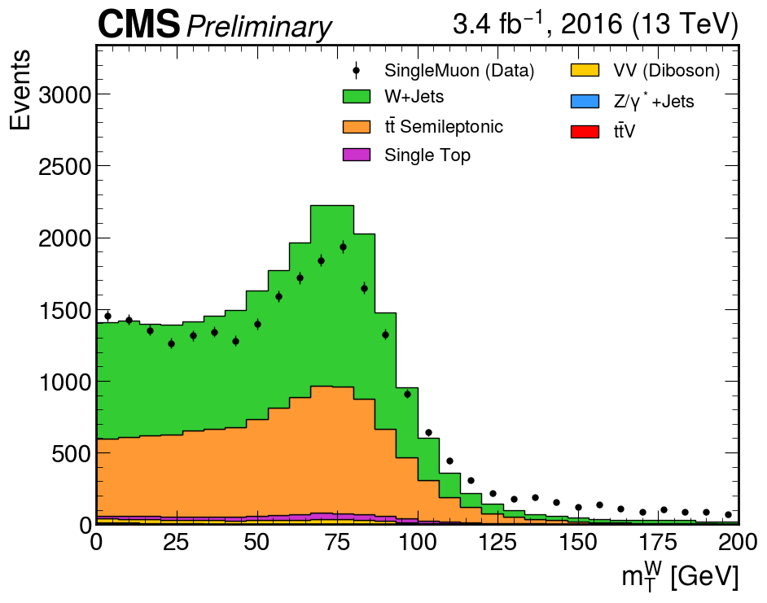
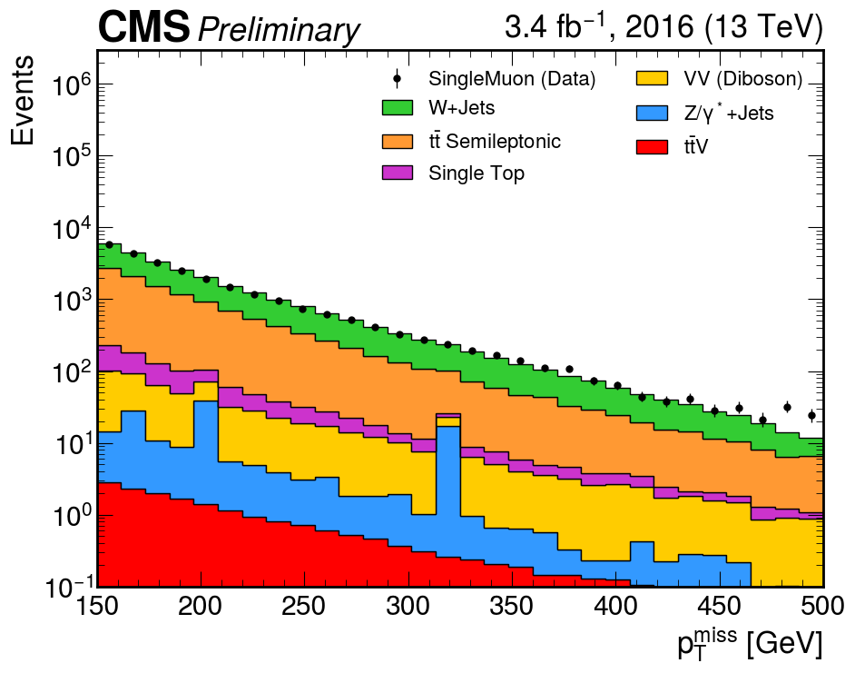
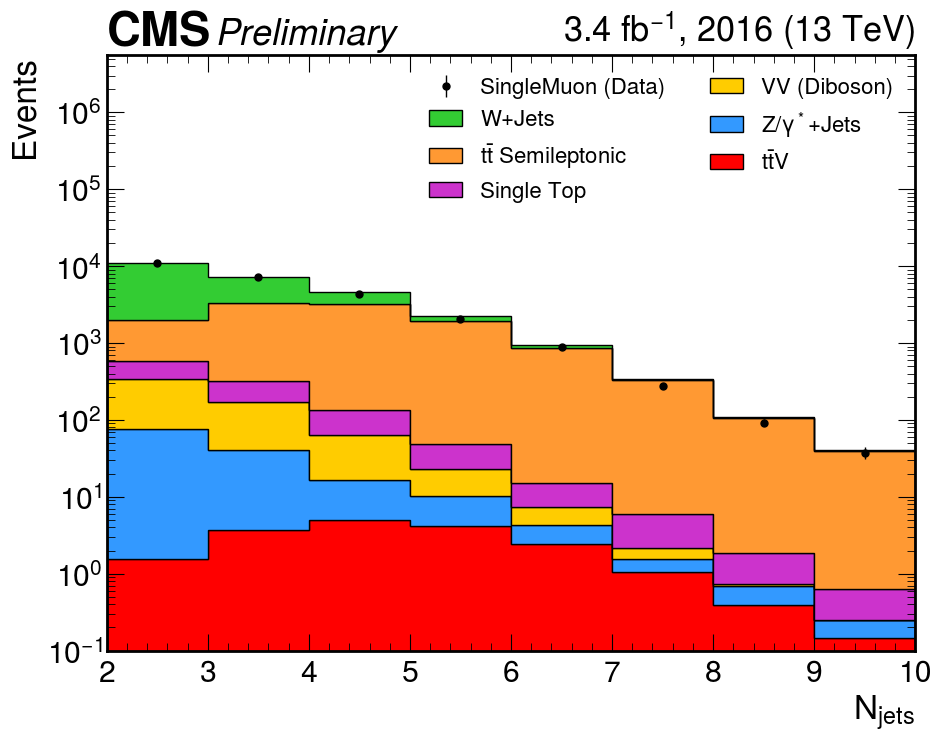
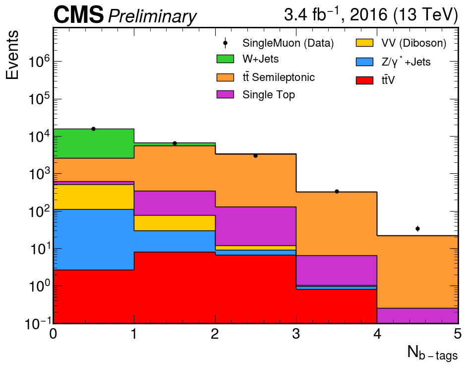
Fix : If we look at the Transverse Mass (\(m_T\)) plot, there is a distinct peak in the Data at 80 GeV. This corresponds exactly to the W boson resonance (\(M_W \approx 80.4\) GeV).The Cause: This resonance peak is dominated by "bulk" events with lower hadronic activity (Low \(H_T\)). However, we are currently only using the WJets-HT400to600 dataset, which represents the high-energy tail.The Consequence: By missing the HT-100to200 and HT-200to400 datasets, we are effectively cutting out the events that populate this resonance. This explains why the Simulation peak is drastically smaller than the Data peak.
Electron
To adapt the muon channel for the electron channel, we switch the signal object from Muon to Electron and adjust the kinematic cuts: pseudorapidity is restricted to \(|\eta| < 2.1\) (instead of 2.4), and a "Gap Veto" is implemented to exclude electrons in the barrel-endcap transition region (\(1.4442 < |\eta| < 1.566\)). Furthermore, the identification criteria change from specific tightId and isolation cuts to the standard cutBased == 4 (Tight ID), and Jet Cleaning is re-evaluated by requiring \(\Delta R > 0.4\) with respect to the selected electron rather than the muon.
#import awkward as ak
#import uproot
#import numpy as np
#import vector
#vector.register_awkward()
def process_electron(filename, dataset="Unknown", IS_DATA=False):
with uproot.open(f"{filename}:Events") as tree:
electrons = ak.zip({
"pt": tree["Electron_pt"].array(),
"eta": tree["Electron_eta"].array(),
"phi": tree["Electron_phi"].array(),
"mass": tree["Electron_mass"].array(),
"cutBased": tree["Electron_cutBased"].array(),
}, with_name="Momentum4D")
muons = ak.zip({
"pt": tree["Muon_pt"].array(),
"eta": tree["Muon_eta"].array(),
"phi": tree["Muon_phi"].array(),
"mass": tree["Muon_mass"].array(),
"looseId": tree["Muon_looseId"].array(),
"iso": tree["Muon_pfRelIso04_all"].array(),
}, with_name="Momentum4D")
jets = ak.zip({
"pt": tree["Jet_pt"].array(),
"eta": tree["Jet_eta"].array(),
"phi": tree["Jet_phi"].array(),
"mass": tree["Jet_mass"].array(),
"jetId": tree["Jet_jetId"].array(),
"btag": tree["Jet_btagDeepFlavB"].array(),
}, with_name="Momentum4D")
met_pt = tree["MET_pt"].array()
met_phi = tree["MET_phi"].array()
if not IS_DATA: gen_weight = tree["genWeight"].array()
else: gen_weight = ak.ones_like(met_pt)
# --- 1. selection---
in_gap = (abs(electrons.eta) > 1.4442) & (abs(electrons.eta) < 1.566)
ele_tight_mask = (electrons.pt > 30) & (abs(electrons.eta) < 2.1) & (electrons.cutBased == 4) & (~in_gap)
ele_veto_mask = (electrons.pt > 10) & (electrons.cutBased >= 1)
mu_loose_mask = (muons.pt > 10) & (abs(muons.eta) < 2.4) & (muons.looseId) & (muons.iso < 0.25)
good_ele = electrons[ele_tight_mask]
veto_ele = electrons[ele_veto_mask]
veto_mu = muons[mu_loose_mask]
has_1_tight = (ak.num(good_ele) == 1)
is_exclusive = (ak.num(veto_ele) == 1) & (ak.num(veto_mu) == 0)
pass_met = met_pt > 150
event_mask = has_1_tight & is_exclusive & pass_met
good_ele = good_ele[event_mask]
jets = jets[event_mask]
met_pt = met_pt[event_mask]
met_phi = met_phi[event_mask]
gen_weight = gen_weight[event_mask]
leading_ele = good_ele[:, 0]
# A. Cleaning with ELECTRON
jet_clean_mask = (
(jets.pt > 30) & (jets.jetId >= 1) &
(jets.deltaR(leading_ele) > 0.4)
)
all_clean_jets = jets[jet_clean_mask]
# B. Categories
central_jets = all_clean_jets[abs(all_clean_jets.eta) < 2.4]
forward_jets = all_clean_jets[(abs(all_clean_jets.eta) >= 2.4) & (abs(all_clean_jets.eta) < 5.0)]
has_2_jets = ak.num(central_jets) >= 2
f_met = met_pt[has_2_jets]
f_met_phi = met_phi[has_2_jets]
f_ele = leading_ele[has_2_jets]
f_central = central_jets[has_2_jets]
f_forward = forward_jets[has_2_jets]
f_gen_weight = gen_weight[has_2_jets]
# mT
dphi = f_ele.phi - f_met_phi
mt = np.sqrt(2 * f_ele.pt * f_met * (1 - np.cos(dphi)))
# min DeltaPhi
jets_top2 = f_central[:, :2]
dphi_jets = abs(jets_top2.phi - f_met_phi)
dphi_jets = np.mod(dphi_jets + np.pi, 2*np.pi) - np.pi
min_dphi = ak.min(abs(dphi_jets), axis=1)
# B-tagging
is_btag = f_central.btag > 0.2770
n_btag = ak.sum(is_btag, axis=1)
# Extras
n_fwd = ak.num(f_forward)
b_jets = f_central[is_btag]
has_b = ak.num(b_jets) > 0
b_jet_padded = ak.fill_none(ak.firsts(b_jets), {"pt": 0, "phi": 0}, axis=0)
dphi_b = b_jet_padded.phi - f_met_phi
calc_mt_b = np.sqrt(2 * b_jet_padded.pt * f_met * (1 - np.cos(dphi_b)))
mt_b_np = ak.to_numpy(calc_mt_b)
has_b_np = ak.to_numpy(has_b)
mt_b_np[~has_b_np] = -1.0
return {
"dataset": dataset,
"lep_pt": ak.to_numpy(f_ele.pt),
"lep_eta": ak.to_numpy(f_ele.eta),
"met": ak.to_numpy(f_met),
"mT_W": ak.to_numpy(mt),
"genWeight": ak.to_numpy(f_gen_weight),
"nJet": ak.to_numpy(ak.num(f_central)),
"nBTag": ak.to_numpy(n_btag),
"min_dphi": ak.to_numpy(min_dphi),
"nForwardJets": ak.to_numpy(n_fwd),
"mT_b": mt_b_np
}
and with the same idea as the muon one
#import pandas as pd
#import os
datasets_electron_channel = [ # DATA
'ttbar-semileptonic', # Main Background
'ttW',
'WW', 'ZZ', 'Zvv',
'DYJets-Zpt200', # Drell–Yan (important for Z→ee)
't-channel-top',
'WJets-HT400to600',
't-channel-antitop',
'WJets-HT70to100' # W+Jets
]
def process_dataset_electron_raw(dataset, n_files=5):
# Explicit detection for data
is_data = "SingleElectron" in dataset
print(f" Processing RAW Electron {dataset} (Is Data: {is_data})...")
if dataset not in fileset:
print(f"{dataset} not found in fileset. Skipping.")
return None
files = fileset[dataset]["files"][:n_files]
dfs = []
for f in files:
try:
# Call the electron-level physics processing function
# (Make sure 'process_electron' is defined earlier)
data_dict = process_electron(f, dataset=dataset, IS_DATA=is_data)
df = pd.DataFrame(data_dict)
dfs.append(df)
except Exception as e:
# Report individual file errors without stopping the loop
print(f" Error in file {f}: {e}")
if len(dfs) == 0:
print(f"No valid events were produced for {dataset}")
return None
full_df = pd.concat(dfs, ignore_index=True)
# Save output
os.makedirs("output_raw", exist_ok=True)
# NOTE: we use '_electron_raw' to avoid overlapping with muon outputs
output_path = f"output_raw/{dataset}_electron_raw.parquet"
full_df.to_parquet(output_path, index=False)
print(f"Saved: {output_path} with {len(full_df)} events.")
return full_df
# --- 3. MASS EXECUTION ---
# Use n_files=10 or more for reasonable statistics
N_FILES = 10
print(f"=== STARTING ELECTRON PROCESSING ({N_FILES} files per dataset) ===")
for ds in datasets_electron_channel:
process_dataset_electron_raw(ds, n_files=N_FILES)
=== STARTING ELECTRON PROCESSING (10 files per dataset) ===
Processing RAW Electron SingleElectron (Is Data: True)...
Saved: output_raw/SingleElectron_electron_raw.parquet with 10757 events.
Processing RAW Electron ttbar-semileptonic (Is Data: False)...
Saved: output_raw/ttbar-semileptonic_electron_raw.parquet with 78228 events.
Processing RAW Electron ttW (Is Data: False)...
Saved: output_raw/ttW_electron_raw.parquet with 60974 events.
Processing RAW Electron WW (Is Data: False)...
Saved: output_raw/WW_electron_raw.parquet with 6141 events.
Processing RAW Electron ZZ (Is Data: False)...
Saved: output_raw/ZZ_electron_raw.parquet with 83 events.
Processing RAW Electron Zvv (Is Data: False)...
Saved: output_raw/Zvv_electron_raw.parquet with 24 events.
Processing RAW Electron DYJets-Zpt200 (Is Data: False)...
Saved: output_raw/DYJets-Zpt200_electron_raw.parquet with 1398 events.
Processing RAW Electron t-channel-top (Is Data: False)...
Saved: output_raw/t-channel-top_electron_raw.parquet with 4238 events.
Processing RAW Electron WJets-HT400to600 (Is Data: False)...
Saved: output_raw/WJets-HT400to600_electron_raw.parquet with 35219 events.
#import pandas as pd
#imp
datasets_electron_channel = [
'SingleElectron',
]
def process_dataset_electron_raw(dataset, n_files=5):
# Explicit detection for data
is_data = "SingleElectron" in dataset
print(f" Processing RAW Electron {dataset} (Is Data: {is_data})...")
if dataset not in fileset:
print(f"{dataset} not found in fileset. Skipping.")
return None
files = fileset[dataset]["files"][:n_files]
dfs = []
for f in files:
try:
# Call the electron-level physics processing function
# (Make sure 'process_electron' is defined earlier)
data_dict = process_electron(f, dataset=dataset, IS_DATA=is_data)
df = pd.DataFrame(data_dict)
dfs.append(df)
except Exception as e:
# Report individual file errors without stopping the loop
print(f" Error in file {f}: {e}")
if len(dfs) == 0:
print(f"No valid events were produced for {dataset}")
return None
full_df = pd.concat(dfs, ignore_index=True)
# Save output
os.makedirs("output_raw", exist_ok=True)
# NOTE: we use '_electron_raw' to avoid overlapping with muon outputs
output_path = f"output_raw/{dataset}_electron_raw.parquet"
full_df.to_parquet(output_path, index=False)
print(f"Saved: {output_path} with {len(full_df)} events.")
return full_df
# --- 3. MASS EXECUTION ---
# Use n_files=10 or more for reasonable statistics
N_FILES = 20
print(f"=== STARTING ELECTRON PROCESSING ({N_FILES} files per dataset) ===")
for ds in datasets_electron_channel:
process_dataset_electron_raw(ds, n_files=N_FILES)
=== STARTING ELECTRON PROCESSING (20 files per dataset) ===
Processing RAW Electron SingleElectron (Is Data: True)...
Saved: output_raw/SingleElectron_electron_raw.parquet with 20948 events.
def load_all_electrons_cleaned():
loaded_dfs = {}
datasets_electron_channel = [
'SingleElectron', 'ttbar-semileptonic',
'ttW', 'WW', 'ZZ', 'Zvv', 'DYJets-Zpt200',
't-channel-top',
't-channel-antitop',
'WJets-HT400to600',
'WJets-HT100to200',
'WJets-HT200to400',
'WJets-HT70to100'
]
LUM = 3400.0
for dataset in datasets_electron_channel:
path = f"output_raw/{dataset}_electron_raw.parquet"
try:
df = pd.read_parquet(path)
if dataset in DATA_SL:
df["final_weight"] = 1.0
else:
xsec = fileset[dataset]["metadata"]["xsec"]
sum_w = sum_weights_map.get(dataset, 1.0)
if sum_w == 0: sum_w = 1.0
scale = (xsec * LUM) / sum_w
if "genWeight" in df.columns:
df["final_weight"] = df["genWeight"] * scale
else:
df["final_weight"] = scale
loaded_dfs[dataset] = df
print(f" Cargado: {dataset}")
except FileNotFoundError:
continue
return loaded_dfs
ele_dfs_clean = load_all_electrons_cleaned()
if len(ele_dfs_clean) > 0:
print("\n plots ")
all_dfs = ele_dfs_clean # THIS CAUSES plot_grouped_stack TO USE ELECTRONS
mi_canal = "SingleElectron"
plot_grouped_stack("mT_W", r"$m_T^W$ [GeV]", (0, 200), mi_canal, log_scale=False)
plot_grouped_stack("met", r"$p_T^{miss}$ [GeV]", (150, 500), mi_canal, log_scale=True)
plot_grouped_stack("nJet", r"$N_{jets}$", (2, 10), mi_canal, n_bins=8, log_scale=True)
plot_grouped_stack("nBTag", r"$N_{b-tags}$", (0, 5), mi_canal, n_bins=5, log_scale=True)
else:
print(" No electron data was uploaded.")
Cargado: SingleElectron
Cargado: ttbar-semileptonic
Cargado: ttW
Cargado: WW
Cargado: ZZ
Cargado: Zvv
Cargado: DYJets-Zpt200
Cargado: t-channel-top
Cargado: t-channel-antitop
Cargado: WJets-HT400to600
Cargado: WJets-HT100to200
Cargado: WJets-HT200to400
Cargado: WJets-HT70to100
plots
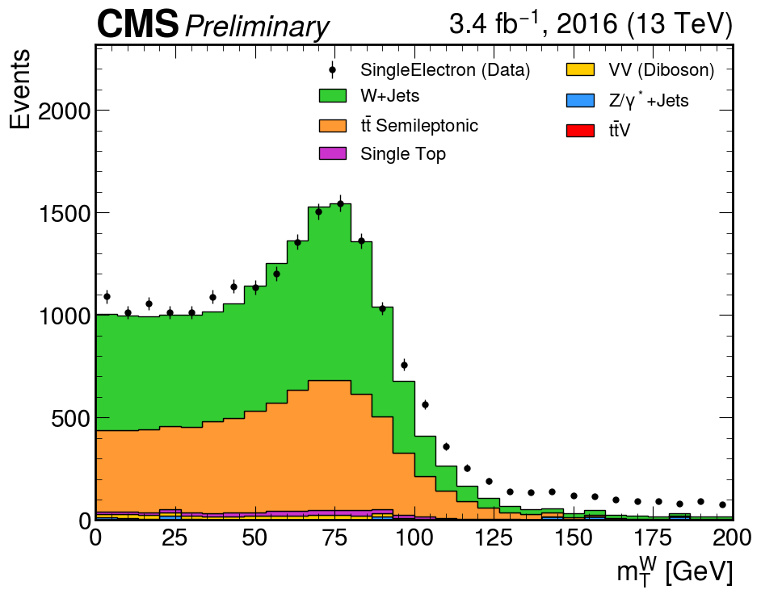
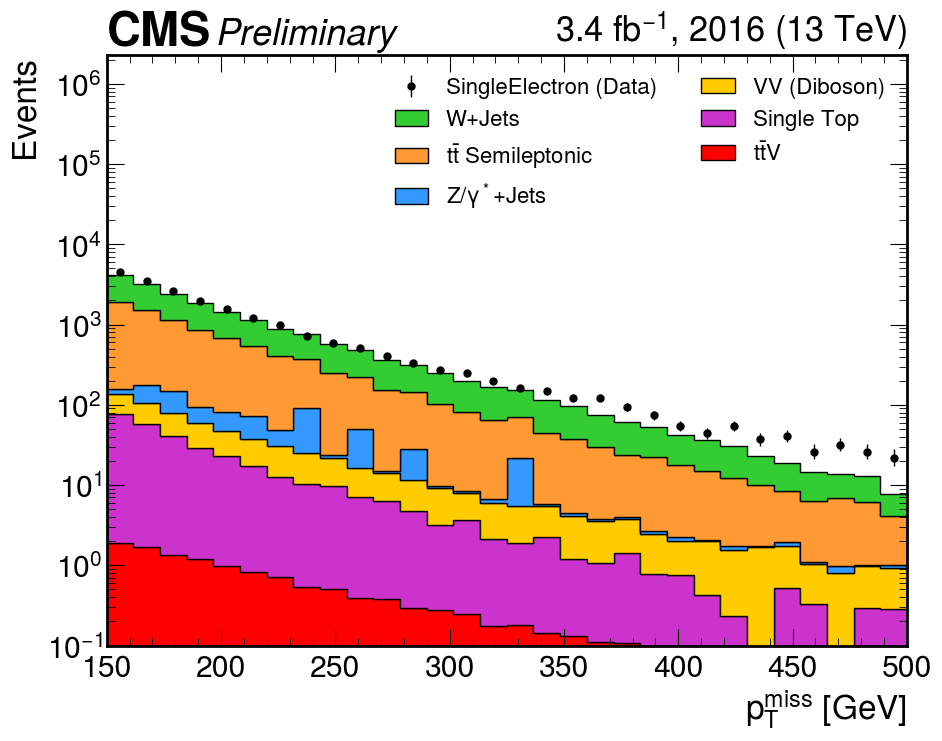
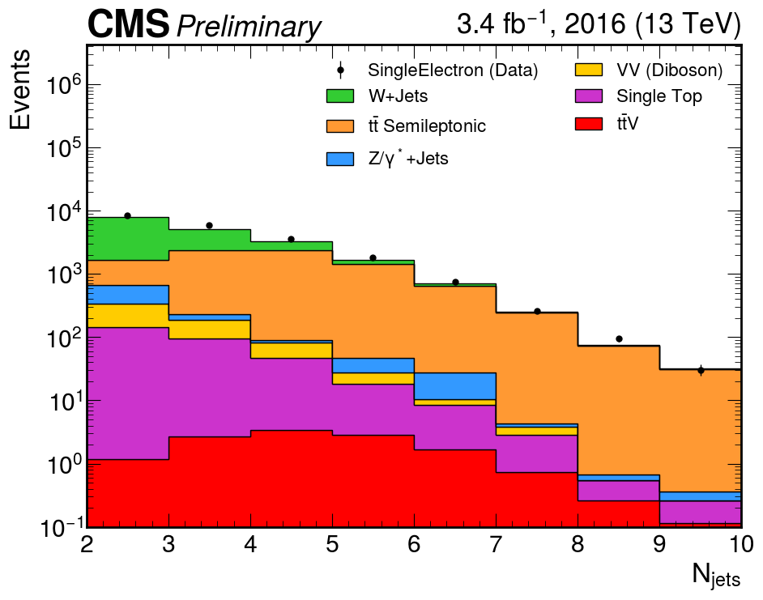
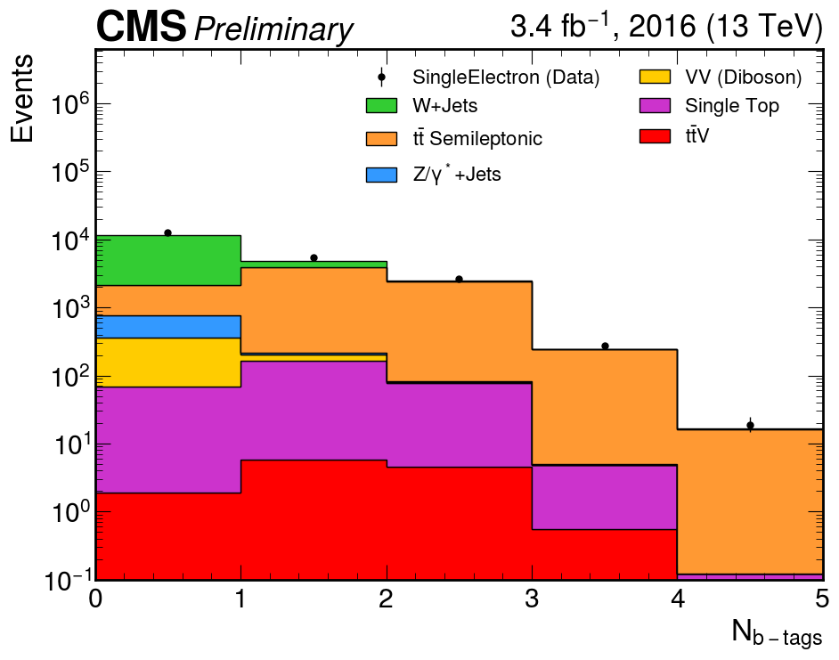
Signal Region
Table 13 — Final Event Selection (SL and AH)
What does it contain?
The official final cuts defining the analysis Signal Regions (SR). Each SR is classified according to:
- Channel (semi-leptonic or hadronic)
- Number of b-jets
- Presence of forward jets
- Values of MET, MT, HT, etc.
It defines the regions where dark matter signals are searched for. These regions are fed directly into the final statistical fit.
We categorize these regions to distinguish the signal from specific backgrounds (e.g., high -tag bins suppress +jets while enhancing -like topologies). If Dark Matter exists, we expect to observe a statistical excess of events in the high- tails compared to the Standard Model prediction.
display(Image(filename="Table_13.png"))
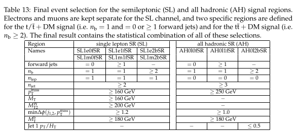
Now we move to the signal region. We use the events that were already filtered by the baseline selection and then apply the additional cuts described in Table 13. To do this, we first need to load the preprocessed datasets stored as parquet files, so the following function was created.
This function loads only the datasets needed for the analysis channel (muon or electron)
Issues
The normalization is applied again at the loading stage because the stored .parquet files do not consistently contain a final, analysis-ready weight. In some cases, the final_weight column is not saved at all, and in others it may have been produced using a different luminosity, a different fileset configuration, or an earlier definition of the analysis.
To avoid mixing inconsistent normalizations and to guarantee that all samples are treated uniformly, the normalization is recomputed at runtime using the current cross sections and the total sum of generator weights. This ensures that the final event yields are coherent and directly comparable across datasets.
def load_data(channel="muon"):
loaded_dfs = {}
datasets_to_load = [
'SingleMuon' if channel == 'muon' else 'SingleElectron',
'ttbar-semileptonic', 'ttW', 'WW', 'ZZ', 'Zvv',
'DYJets-Zpt200', 't-channel-top','t-channel-antitop','WJets-HT400to600','WJets-HT100to200','WJets-HT70to100','WJets-HT200to400'
]
LUM = 3400.0
suffix = "_raw.parquet" if channel == "muon" else "_electron_raw.parquet"
for ds in datasets_to_load:
path = f"output_raw/{ds}{suffix}"
try:
df = pd.read_parquet(path)
# Normalización
if ds in DATA_SL:
df["final_weight"] = 1.0
else:
if ds not in fileset: continue
xsec = fileset[ds]["metadata"]["xsec"]
sum_w = sum_weights_map.get(ds, 1.0)
if sum_w == 0: sum_w = 1.0
scale = (xsec * LUM) / sum_w
if "genWeight" in df.columns:
df["final_weight"] = df["genWeight"] * scale
else:
df["final_weight"] = scale
loaded_dfs[ds] = df
except FileNotFoundError:
continue
return loaded_dfs
def signal_regions(df):
if df is None or len(df) == 0: return {}
pass_common = (
(df["met"] > 160) &
(df["min_dphi"] > 0.5)
)
df_sr = df[pass_common]
if len(df_sr) == 0: return {}
# Definition of the 3 Regions (Categories)
mask_1b_0f = (df_sr["nBTag"] == 1) & (df_sr["nForwardJets"] == 0)
mask_1b_1f = (df_sr["nBTag"] == 1) & (df_sr["nForwardJets"] >= 1)
mask_2b = (df_sr["nBTag"] >= 2)
return {
"SR_1b_0f": df_sr[mask_1b_0f],
"SR_1b_1f": df_sr[mask_1b_1f],
"SR_2b": df_sr[mask_2b]
}
Once plot_grouped_stack was defined, the same base code was reused to create plot_region_stack. The logic of the stacked histogram is the same, but extra features were added to handle analysis regions. In particular, a region label is drawn on the plot and the display is adapted to show results specific to a selected region. This keeps the core behavior unchanged while adding more flexibility for regional visualization.
The main changes are:
- A region label parameter was added to the function signature.
- A text label was drawn on the plot using a line like:
ax.text(..., region_label, ...) - The plot title or decoration was adapted to reflect the selected region.
- Small adjustments were made to make the function work with region-specific dictionaries.
All other parts of the stacking logic (histogram creation, grouping, colors, and legends) remain unchanged.
def plot_region_stack(dfs_dict, region_name, var_name, x_label, x_range, channel_label, n_bins=10):
bins = np.linspace(x_range[0], x_range[1], n_bins + 1)
grouped_counts = {}
grouped_info = {}
for name, df in dfs_dict.items():
if name in DATA_SL: continue
counts, _ = np.histogram(df[var_name], bins=bins, weights=df["final_weight"])
g_key, label, color = get_group_info(name)
if g_key not in grouped_counts:
grouped_counts[g_key] = counts
grouped_info[g_key] = {"label": label, "color": color, "yield": np.sum(counts)}
else:
grouped_counts[g_key] += counts
grouped_info[g_key]["yield"] += np.sum(counts)
# Sort stack
active_groups = sorted(grouped_info.keys(), key=lambda k: grouped_info[k]["yield"])
mc_counts = []
mc_colors = []
mc_labels = []
total_mc = np.zeros(n_bins)
for g in active_groups:
mc_counts.append(grouped_counts[g])
mc_colors.append(grouped_info[g]["color"])
mc_labels.append(grouped_info[g]["label"])
total_mc += grouped_counts[g]
# Data
df_data = dfs_dict.get(channel_label)
data_counts = np.zeros(n_bins)
if df_data is not None:
data_counts, _ = np.histogram(df_data[var_name], bins=bins)
fig, ax = plt.subplots(figsize=(10, 8))
if len(mc_counts) > 0:
hep.histplot(mc_counts, bins=bins, stack=True, histtype="fill",
color=mc_colors, label=mc_labels, edgecolor="black", linewidth=1, ax=ax)
hep.histplot(data_counts, bins=bins, histtype="errorbar", color="black",
label=f"{channel_label} (Data)", yerr=True, marker='o', markersize=5, ax=ax)
hep.cms.label("Preliminary", data=True, lumi=3.4, year=2016, ax=ax)
handles, labels = ax.get_legend_handles_labels()
by_label = OrderedDict(zip(labels[::-1], handles[::-1]))
ax.legend(by_label.values(), by_label.keys(), fontsize=15, ncol=2, loc='upper right')
ax.text(0.05, 0.93, f"{region_name}", transform=ax.transAxes,
fontsize=20, fontweight='bold', va='top')
ax.set_xlabel(x_label, fontsize=24)
ax.set_ylabel("Events", fontsize=24)
ax.set_xlim(x_range)
ax.set_yscale("log")
max_y = max(np.max(data_counts), np.max(total_mc))
ax.set_ylim(0.1, max_y * 500)
plt.tight_layout()
plt.show()
def run_analysis_for_channel(channel_mode):
raw_dfs = load_data(channel_mode)
if not raw_dfs: return
regions_db = {"SR_1b_0f": {}, "SR_1b_1f": {}, "SR_2b": {}}
for name, df in raw_dfs.items():
sub_regions = signal_regions(df)
for reg, df_reg in sub_regions.items():
regions_db[reg][name] = df_reg
d_label = "SingleMuon" if channel_mode == "muon" else "SingleElectron"
plot_region_stack(regions_db["SR_2b"], "SR 2b", "met", r"$p_T^{miss}$ [GeV]", (160, 600), d_label)
plot_region_stack(regions_db["SR_1b_1f"], r"SR 1b $\geq$1f", "met", r"$p_T^{miss}$ [GeV]", (160, 600), d_label)
plot_region_stack(regions_db["SR_1b_0f"], "SR 1b 0f", "met", r"$p_T^{miss}$ [GeV]", (160, 600), d_label)
from collections import OrderedDict
if 'sum_weights_map' in globals():
run_analysis_for_channel("muon")
run_analysis_for_channel("electron")
else:
print(" Error.")
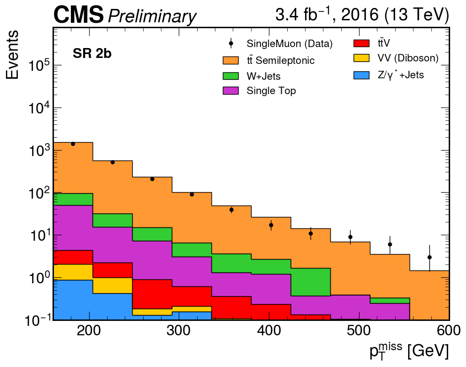
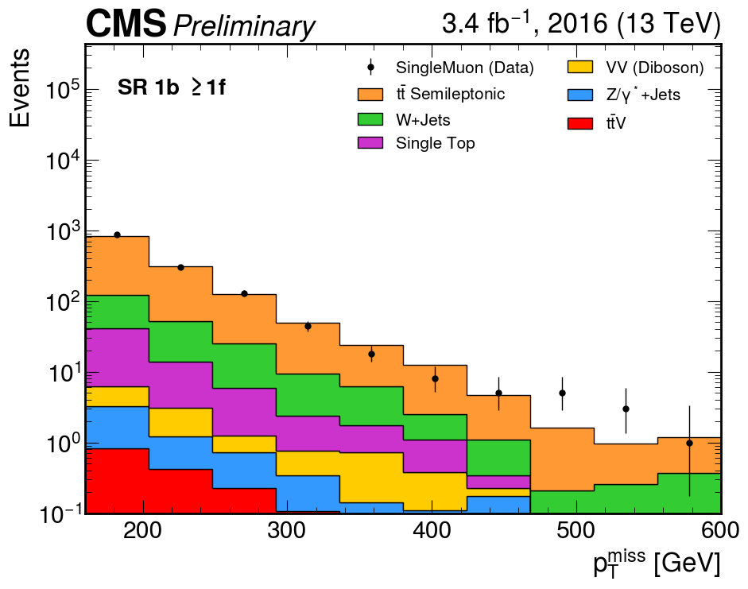
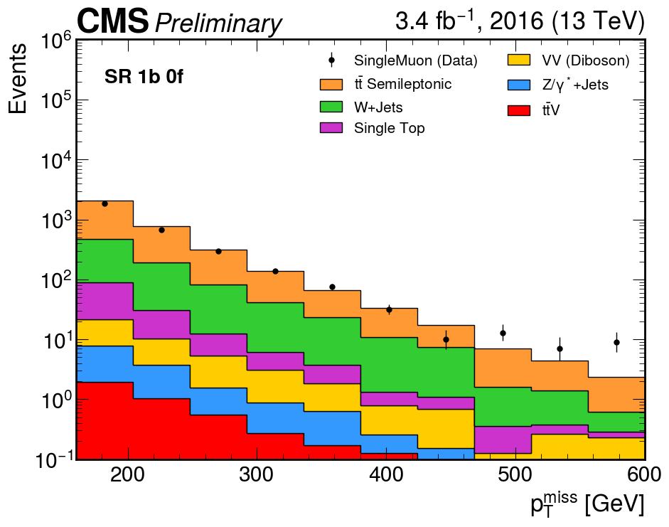
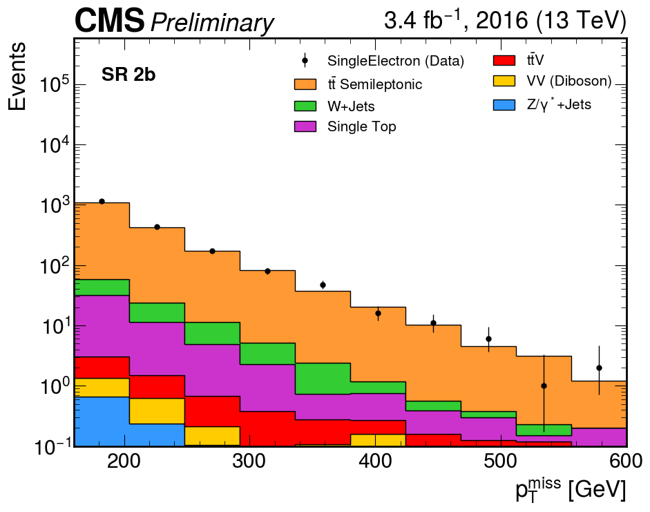
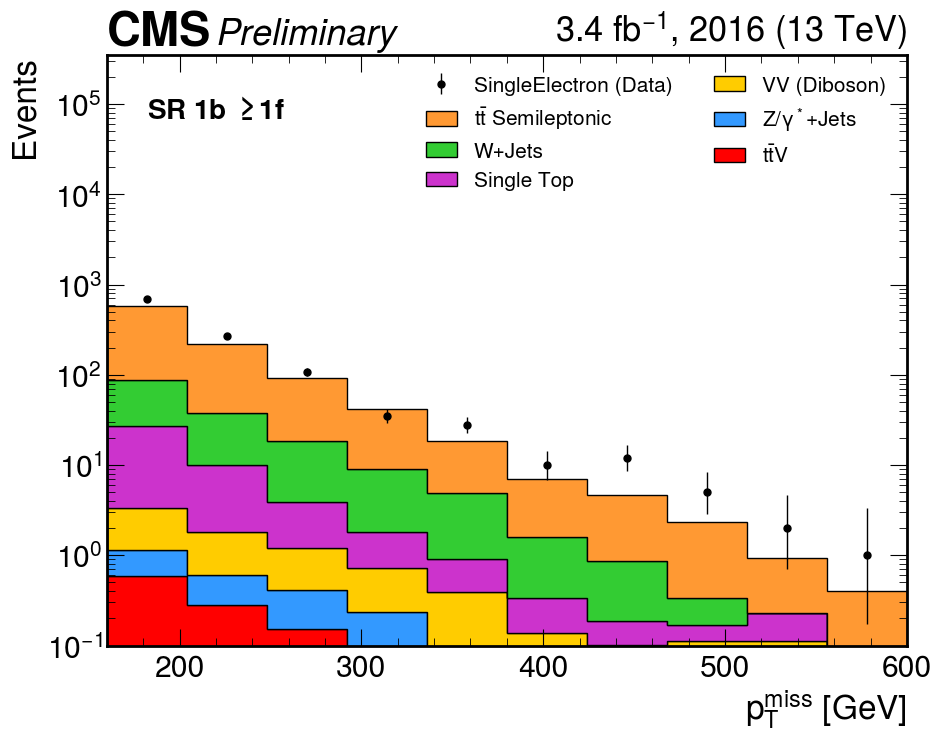
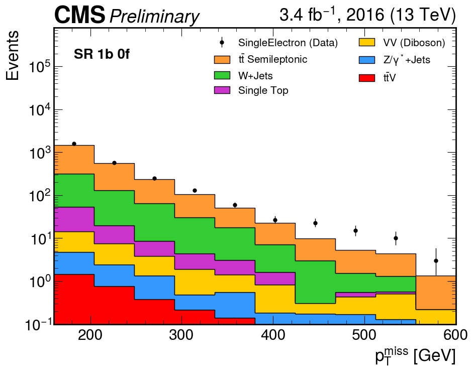
Control Region
Table 14 — Control Region Definitions (SL and AH)
What does it contain?
This table defines the Control Regions (CRs) required to calibrate and validate the main background processes in the analysis:
- Dileptonic tt̄
- W+jets
- Z→νν (in the all-hadronic channel)
- Semileptonic tt̄ (in the all-hadronic channel)
What is it used for?
These regions serve to:
- Constrain and normalize the simulated background yields
- Compare Monte Carlo predictions against real data
- Reduce systematic uncertainties
They are essential for controlling the dominant backgrounds before extracting the signal in the Signal Regions (SRs).
display(Image(filename="Table_14.png"))
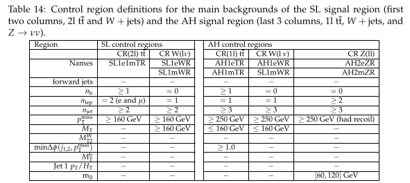
def filter_cr_wlnu(df):
"""
Control Region: CR W(lν)
Nombres oficiales Tabla 14:
- SL1eWR (electrón)
- SL1mWR (muón)
"""
if df is None or len(df) == 0:
return {}
mask = (
(df["met"] >= 160) &
(df["mT_W"] >= 80) &
(df["nBTag"] == 0) &
(df["nJet"] >= 2)
)
df_cr = df[mask]
if len(df_cr) == 0:
return {}
return {"CR_Wlnu": df_cr}
Once plot_region_stack was defined, the same base structure was reused to create plot_cr_stack. The core stacked histogram logic stays the same, but additional lines were added or modified to specialize the plot for Control Regions.
The main changes are:
- A new function name was created:
plot_cr_stack. - A new input parameter was added to handle the control region label (for example:
region_label). - The plot now includes a region tag drawn on the figure, added through a line like:
ax.text(..., region_label, ...) - The function was adapted to work with Control Region–filtered datasets, instead of general or signal regions.
- The default axis ranges and binning were tuned for control-region kinematics.
All histogram stacking, coloring, grouping, and legend logic remains the same as in the previous functions.
def plot_cr_stack(dfs_dict, region_label, var_name, x_label, x_range, data_label, n_bins=15):
bins = np.linspace(x_range[0], x_range[1], n_bins + 1)
grouped_counts = {}
grouped_info = {}
# A) MC
for name, df in dfs_dict.items():
if name in DATA_SL:
continue
counts, _ = np.histogram(df[var_name], bins=bins, weights=df["final_weight"])
g_key, label, color = get_group_info(name)
if g_key not in grouped_counts:
grouped_counts[g_key] = counts
grouped_info[g_key] = {"label": label, "color": color, "yield": np.sum(counts)}
else:
grouped_counts[g_key] += counts
grouped_info[g_key]["yield"] += np.sum(counts)
active_groups = sorted(grouped_info.keys(), key=lambda k: grouped_info[k]["yield"])
mc_counts = []
mc_colors = []
mc_labels = []
total_mc = np.zeros(n_bins)
for g in active_groups:
mc_counts.append(grouped_counts[g])
mc_colors.append(grouped_info[g]["color"])
mc_labels.append(grouped_info[g]["label"])
total_mc += grouped_counts[g]
# B) DATA
df_data = dfs_dict.get(data_label)
if df_data is not None:
data_counts, _ = np.histogram(df_data[var_name], bins=bins)
else:
data_counts = np.zeros(n_bins)
# === Plot ===
fig, ax = plt.subplots(figsize=(10, 8))
hep.histplot(mc_counts, bins=bins, stack=True, histtype="fill",
color=mc_colors, label=mc_labels, edgecolor="black", linewidth=1, ax=ax)
hep.histplot(data_counts, bins=bins, histtype="errorbar", color="black",
label=f"{data_label} (Data)", yerr=True, marker='o', markersize=5, ax=ax)
hep.cms.label("Preliminary", data=True, lumi=3.4, year=2016, ax=ax)
ax.text(0.05, 0.93, region_label, transform=ax.transAxes,
fontsize=20, fontweight='bold', va='top', ha='left')
handles, labels = ax.get_legend_handles_labels()
by_label = OrderedDict(zip(labels[::-1], handles[::-1]))
ax.legend(by_label.values(), by_label.keys(), fontsize=15, ncol=2, loc='upper right')
ax.set_xlabel(x_label, fontsize=24)
ax.set_ylabel("Events", fontsize=24)
ax.set_xlim(x_range)
ax.set_yscale("log")
max_y = max(np.max(data_counts), np.max(total_mc))
ax.set_ylim(0.1, max_y * 500)
plt.tight_layout()
plt.show()
def run_SL(channel_mode):
# 1. Load datasets
raw_dfs = load_data(channel_mode)
if not raw_dfs:
return
# 2. Filtrar región CR W(lν)
cr_dict = {}
for name, df in raw_dfs.items():
reg = filter_cr_wlnu(df)
if "CR_Wlnu" in reg:
cr_dict[name] = reg["CR_Wlnu"]
if len(cr_dict) == 0:
print(" No events passed CR W(lν).")
return
# 3. Etiquetas correctas según Tabla 14
if channel_mode == "muon":
region_label = "SL1mWR"
data_label = "SingleMuon"
else:
region_label = "SL1eWR"
data_label = "SingleElectron"
# plot MET
plot_cr_stack(cr_dict, region_label, "met", r"$p_T^{miss}$ [GeV]", (160, 600), data_label, n_bins=15)
# plot MT
#plot_cr_stack(cr_dict, region_label, "mT_W", r"$m_T^W$ [GeV]", (160, 500), data_label, n_bins=15)
# --- RUN ---
run_SL("muon")
run_SL("electron")
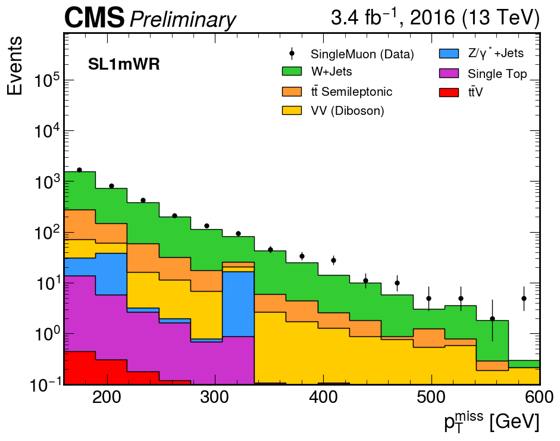
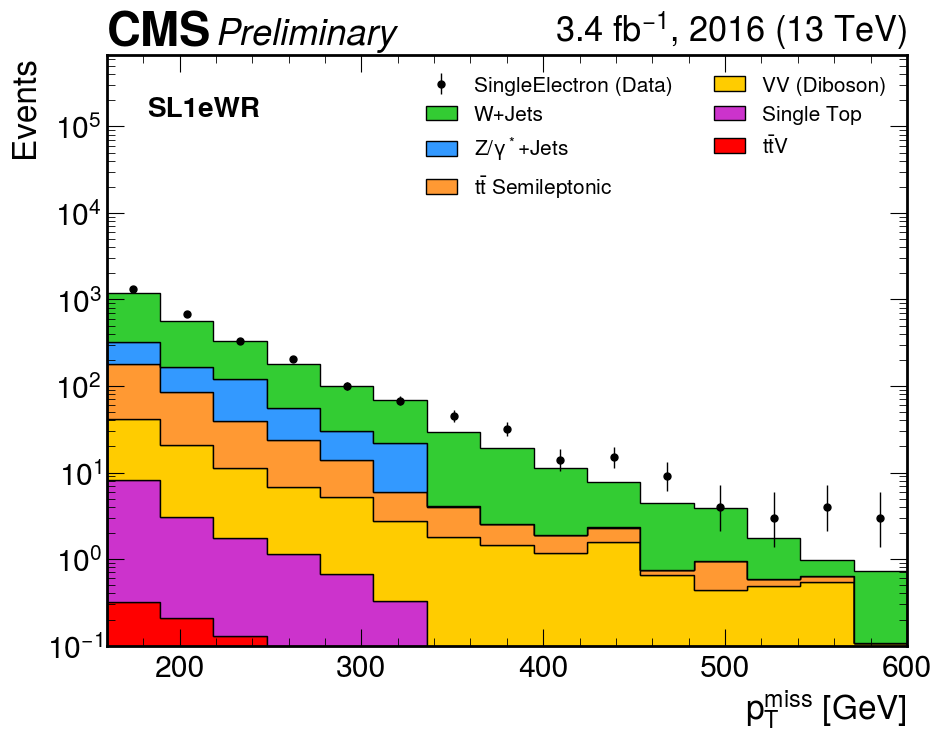